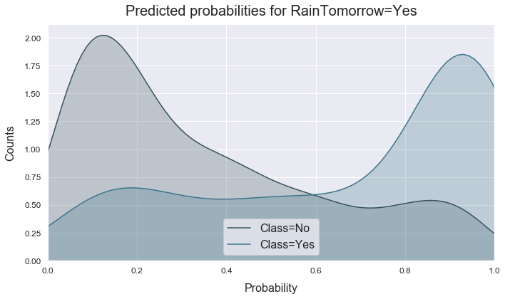
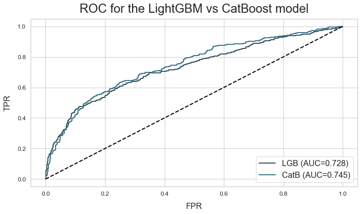
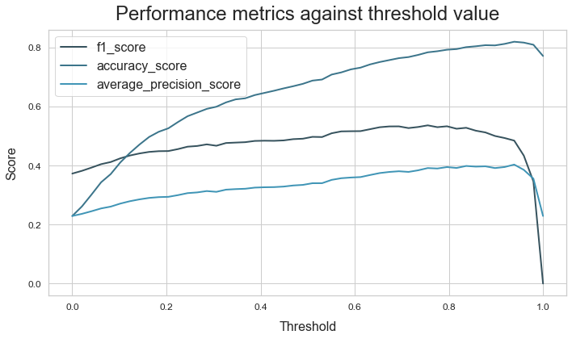
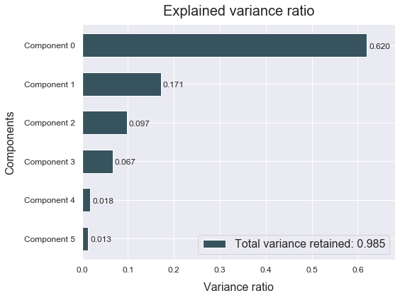

Binary Classification
Download the Australian weather dataset from https://www.kaggle.com/jsphyg/weather-dataset-rattle-package.
This dataset tries to predict whether or not it will rain tomorrow by
training a classification model on target RainTomorrow.
Load the data
# Import packages
import numpy as np
import pandas as pd
from atom import ATOMClassifier
# Load the Australian weather dataset
X = pd.read_csv('../weatherAUS.csv')
X = X.drop(['RISK_MM', 'Date'], axis=1) # Drop unrelated features
Run the pipeline
# Call ATOM using only a percentage of the complete dataset (for explanatory purposes)
atom = ATOMClassifier(X, y="RainTomorrow", percentage=5, log='auto', verbose=3)
<<=============== ATOM ===============>>
Initial data cleaning...
--> Dropping 45 duplicate rows.
Algorithm task: binary classification.
Dataset stats ===================>
Shape: (7107, 22)
Missing values: 15778
Categorical columns: 5
Scaled: False
----------------------------------
Size of training set: 4974
Size of test set: 2133
----------------------------------
Instances in RainTomorrow per class:
| | total | train_set | test_set |
|:-------|---------:|-------------:|------------:|
| 0: No | 5479 | 3854 | 1625 |
| 1: Yes | 1628 | 1120 | 508 |
# If we change a column during the pre-processing,
# we need to call the update method to update all data attributes
atom.X['MaxTemp'] = np.log(atom.X['MaxTemp'])
# MaxTemp has now been changed for atom.X, but not for in atom.X_train, atom.dataset, etc...
# To do se, we do...
atom.update('X')
assert atom.X['MaxTemp'].equals(atom.dataset['MaxTemp'])
# Impute missing values
atom.impute(strat_num='knn', strat_cat='missing', max_frac_rows=0.8)
Imputing missing values...
--> Removing 766 rows for containing too many missing values.
--> Imputing 3 missing values using the KNN imputer in feature MinTemp.
--> Imputing 3 missing values using the KNN imputer in feature MaxTemp.
--> Imputing 27 missing values using the KNN imputer in feature Rainfall.
--> Imputing 2289 missing values using the KNN imputer in feature Evaporation.
--> Imputing 2597 missing values using the KNN imputer in feature Sunshine.
--> Imputing 240 missing values with missing in feature WindGustDir.
--> Imputing 238 missing values using the KNN imputer in feature WindGustSpeed.
--> Imputing 321 missing values with missing in feature WindDir9am.
--> Imputing 28 missing values with missing in feature WindDir3pm.
--> Imputing 1 missing values using the KNN imputer in feature WindSpeed9am.
--> Imputing 4 missing values using the KNN imputer in feature WindSpeed3pm.
--> Imputing 28 missing values using the KNN imputer in feature Humidity9am.
--> Imputing 56 missing values using the KNN imputer in feature Humidity3pm.
--> Imputing 46 missing values using the KNN imputer in feature Pressure9am.
--> Imputing 46 missing values using the KNN imputer in feature Pressure3pm.
--> Imputing 2111 missing values using the KNN imputer in feature Cloud9am.
--> Imputing 2236 missing values using the KNN imputer in feature Cloud3pm.
--> Imputing 9 missing values using the KNN imputer in feature Temp9am.
--> Imputing 33 missing values using the KNN imputer in feature Temp3pm.
--> Imputing 27 missing values with missing in feature RainToday.
# Encode the categorical features
atom.encode(max_onehot=10, frac_to_other=0.04)
Encoding categorical features...
--> Target-encoding feature Location. Contains 1 unique categories.
--> Target-encoding feature WindGustDir. Contains 17 unique categories.
--> Target-encoding feature WindDir9am. Contains 17 unique categories.
--> Target-encoding feature WindDir3pm. Contains 17 unique categories.
--> One-hot-encoding feature RainToday. Contains 3 unique categories.
# Select only the best 10 features
atom.feature_selection(strategy="univariate", solver='f_classif', max_features=15, max_correlation=0.8)
# See which features were removed due to collinearity
atom.collinear
Performing feature selection...
--> Feature Location was removed due to low variance: 0.00.
--> Feature Pressure3pm was removed due to collinearity with another feature.
--> Feature Temp9am was removed due to collinearity with another feature.
--> Feature Temp3pm was removed due to collinearity with another feature.
--> Feature RainToday_Yes was removed due to collinearity with another feature.
--> Feature Evaporation was removed after the univariate test (score: 52.21 p-value: 0.00).
--> Feature WindSpeed9am was removed after the univariate test (score: 39.05 p-value: 0.00).
--> Feature RainToday_other was removed after the univariate test (score: 35.28 p-value: 0.00).
| drop_feature | correlated_feature | correlation_value | |
|---|---|---|---|
| 0 | Pressure3pm | Pressure9am | 0.95794 |
| 1 | Temp9am | MinTemp, MaxTemp | 0.90569, 0.88154 |
| 2 | Temp3pm | MaxTemp, Temp9am | 0.96201, 0.85449 |
| 3 | RainToday_Yes | RainToday_No | -0.98701 |
# Perform undersampling of the majority class to balance the dataset
atom.balance(undersample=0.8)
Using TensorFlow backend.
Performing undersampling...
# Remove outliers from the training set
atom.outliers(max_sigma=5)
Handling outliers...
--> Dropping 30 rows due to outliers.
# Change the verbosity of ATOM to not print too much details while fitting
atom.verbose = 2
# Let's compare the performance of various gradient boosting algorithms
atom.pipeline(['gbm', 'lgb', 'catb'],
metric='accuracy', # You can use a custom metric as well!
max_iter=5,
init_points=5,
cv=1,
bagging=5)
Running pipeline =================>
Models in pipeline: GBM, LGB, CatB
Metric: accuracy
Running BO for Gradient Boosting Machine...
Final results for Gradient Boosting Machine:
Bayesian Optimization ---------------------------
Best hyperparameters: {'n_estimators': 500, 'learning_rate': 0.01, 'subsample': 0.7, 'max_depth': 10, 'max_features': 0.6, 'criterion': 'friedman_mse', 'min_samples_split': 8, 'min_samples_leaf': 18, 'ccp_alpha': 0.0}
Best score on the BO: 0.8098
Time elapsed: 1m:32s
Fitting -----------------------------------------
Score on the training set: 0.9441
Score on the test set: 0.7257
Time elapsed: 5.090s
Bagging -----------------------------------------
Mean: 0.7260 Std: 0.0097
Time elapsed: 16.632s
-------------------------------------------------
Total time: 1m:54s
Running BO for LightGBM...
Final results for LightGBM:
Bayesian Optimization ---------------------------
Best hyperparameters: {'n_estimators': 500, 'learning_rate': 0.18, 'max_depth': 10, 'num_leaves': 40, 'min_child_weight': 2, 'min_child_samples': 11, 'subsample': 0.5, 'colsample_bytree': 0.3, 'reg_alpha': 0.0, 'reg_lambda': 100.0}
Best score on the BO: 0.8152
Time elapsed: 2.772s
Fitting -----------------------------------------
Score on the training set: 0.9637
Score on the test set: 0.7030
Time elapsed: 3.904s
Bagging -----------------------------------------
Mean: 0.7116 Std: 0.0118
Time elapsed: 2.291s
-------------------------------------------------
Total time: 8.968s
Running BO for CatBoost...
Final results for CatBoost:
Bayesian Optimization ---------------------------
Best hyperparameters: {'n_estimators': 500, 'learning_rate': 0.28, 'max_depth': 2, 'subsample': 0.8, 'colsample_bylevel': 1.0, 'reg_lambda': 100.0}
Best score on the BO: 0.8045
Time elapsed: 13.710s
Fitting -----------------------------------------
Score on the training set: 0.8850
Score on the test set: 0.6803
Time elapsed: 0.670s
Bagging -----------------------------------------
Mean: 0.7004 Std: 0.0108
Time elapsed: 2.709s
-------------------------------------------------
Total time: 17.089s
Final results ================>>
Duration: 2m:20s
Metric: accuracy
--------------------------------
Gradient Boosting Machine --> 0.726 ± 0.010 !! ~
LightGBM --> 0.712 ± 0.012 ~
CatBoost --> 0.700 ± 0.011 ~
Analyze the results
# Lets have a look at the best model
print('And the winner is...', atom.winner.longname)
print('Score on the training set: ', atom.winner.score_train)
print('Score on the test set: ', atom.winner.score_test)
And the winner is... Gradient Boosting Machine
Score on the training set: 0.9441117764471058
Score on the test set: 0.7256766642282371
# Make some plots to analyze the results
atom.winner.plot_confusion_matrix(normalize=True, figsize=(7, 7), filename='confusion_matrix.png')
atom.winner.plot_probabilities()
# Change plots aesthetics
ATOMClassifier.set_style('whitegrid')
ATOMClassifier.set_title_fontsize(24)
atom.plot_ROC(models=('LGB', 'CatB'), title="ROC for the LightGBM vs CatBoost model")
atom.plot_PRC(title="PRC comparison of the models")
atom.catb.plot_threshold(metric=['f1', 'accuracy', 'average_precision'], steps=50, filename='thresholds.png')





Multiclass classification
Import the wine dataset from sklearn.datasets. This is a small and easy to train dataset which goal is to classify wines into three groups (which cultivator it's from) using features based on the results of chemical analysis.
Load the data
# Import packages
import numpy as np
import pandas as pd
from sklearn.datasets load_wine
from atom.atom import ATOMClassifier
# Load the dataset's features and targets
dataset = load_wine()
# Convert to pd.DtaFrame to get the names of the features
data = np.c_[dataset.data, dataset.target]
columns = np.append(dataset.feature_names, ["target"])
data = pd.DataFrame(data, columns=columns)
X = data.drop('target', axis=1)
y = data['target']
Run the pipeline
# Call ATOMclass for ML task exploration
atom = ATOMClassifier(X, y, n_jobs=-1, verbose=3)
# Fit the pipeline with the selected models
atom.pipeline(models=['LDA','RF', 'lSVM'],
metric='f1_macro',
max_iter=4,
init_points=3,
cv=3,
bagging=10)
<<=============== ATOM ===============>>
Parallel processing with 4 cores.
Initial data cleaning...
Algorithm task: multiclass classification. Number of classes: 3.
Dataset stats ===================>
Shape: (178, 14)
Scaled: False
----------------------------------
Size of training set: 124
Size of test set: 54
----------------------------------
Instances in target per class:
| | total | train_set | test_set |
|---:|---------:|-------------:|------------:|
| 0 | 59 | 42 | 17 |
| 1 | 71 | 47 | 24 |
| 2 | 48 | 35 | 13 |
Running pipeline =================>
Models in pipeline: LDA, RF, lSVM
Metric: f1_macro
Running BO for Linear Discriminant Analysis...
Initial point: 1 --------------------------------
Parameters --> {'solver': 'lsqr', 'shrinkage': 0.9}
Evaluation --> f1_macro: 0.6787
Time elapsed: 0.815s Total time: 0.816s
Initial point: 2 --------------------------------
Parameters --> {'solver': 'lsqr', 'shrinkage': 0.8}
Evaluation --> f1_macro: 0.6865
Time elapsed: 0.505s Total time: 1.320s
Initial point: 3 --------------------------------
Parameters --> {'solver': 'eigen', 'shrinkage': 0.7}
Evaluation --> f1_macro: 0.6667
Time elapsed: 0.021s Total time: 1.341s
Iteration: 1 ------------------------------------
Parameters --> {'solver': 'svd'}
Evaluation --> f1_macro: 0.9753
Time elapsed: 0.020s Total time: 1.560s
Iteration: 2 ------------------------------------
Parameters --> {'solver': 'svd'}
Evaluation --> f1_macro: 0.9753
Time elapsed: 0.026s Total time: 1.796s
Final results for Linear Discriminant Analysis:
Bayesian Optimization ---------------------------
Best hyperparameters: {'solver': 'svd'}
Best score on the BO: 0.9753
Time elapsed: 1.936s
Fitting -----------------------------------------
Score on the training set: 1.0000
Score on the test set: 0.9617
Time elapsed: 0.079s
Bagging -----------------------------------------
Mean: 0.9788 Std: 0.0159
Time elapsed: 0.035s
-------------------------------------------------
Total time: 2.050s
Running BO for Random Forest...
Initial point: 1 --------------------------------
Parameters --> {'n_estimators': 460, 'max_depth': 5, 'max_features': 0.9, 'criterion': 'entropy', 'min_samples_split': 10, 'min_samples_leaf': 20, 'ccp_alpha': 0.03, 'bootstrap': True, 'max_samples': 0.7}
Evaluation --> f1_macro: 0.8673
Time elapsed: 0.835s Total time: 0.836s
Initial point: 2 --------------------------------
Parameters --> {'n_estimators': 210, 'max_depth': 6, 'max_features': 0.5, 'criterion': 'entropy', 'min_samples_split': 11, 'min_samples_leaf': 14, 'ccp_alpha': 0.025, 'bootstrap': False}
Evaluation --> f1_macro: 0.9357
Time elapsed: 0.449s Total time: 1.286s
Initial point: 3 --------------------------------
Parameters --> {'n_estimators': 155, 'max_depth': 7, 'max_features': 0.7, 'criterion': 'entropy', 'min_samples_split': 18, 'min_samples_leaf': 13, 'ccp_alpha': 0.02, 'bootstrap': False}
Evaluation --> f1_macro: 0.8638
Time elapsed: 0.405s Total time: 1.691s
Iteration: 1 ------------------------------------
Parameters --> {'n_estimators': 460, 'max_depth': 6, 'max_features': 0.9, 'criterion': 'entropy', 'min_samples_split': 10, 'min_samples_leaf': 20, 'ccp_alpha': 0.035, 'bootstrap': True, 'max_samples': 0.7}
Evaluation --> f1_macro: 0.9073
Time elapsed: 0.827s Total time: 2.801s
Iteration: 2 ------------------------------------
Parameters --> {'n_estimators': 20, 'max_depth': 3, 'max_features': 0.7, 'criterion': 'gini', 'min_samples_split': 3, 'min_samples_leaf': 18, 'ccp_alpha': 0.015, 'bootstrap': False}
Evaluation --> f1_macro: 0.8953
Time elapsed: 0.234s Total time: 3.362s
Iteration: 3 ------------------------------------
Parameters --> {'n_estimators': 20, 'max_depth': 8, 'max_features': 0.6, 'criterion': 'entropy', 'min_samples_split': 14, 'min_samples_leaf': 3, 'ccp_alpha': 0.03, 'bootstrap': True, 'max_samples': 0.6}
Evaluation --> f1_macro: 0.9512
Time elapsed: 0.231s Total time: 3.822s
Iteration: 4 ------------------------------------
Parameters --> {'n_estimators': 20, 'max_depth': 9, 'max_features': 1.0, 'criterion': 'entropy', 'min_samples_split': 20, 'min_samples_leaf': 7, 'ccp_alpha': 0.02, 'bootstrap': False}
Evaluation --> f1_macro: 0.8560
Time elapsed: 0.235s Total time: 4.563s
Final results for Random Forest:
Bayesian Optimization ---------------------------
Best hyperparameters: {'n_estimators': 20, 'max_depth': 8, 'max_features': 0.6, 'criterion': 'entropy', 'min_samples_split': 14, 'min_samples_leaf': 3, 'ccp_alpha': 0.03, 'bootstrap': True, 'max_samples': 0.6}
Best score on the BO: 0.9512
Time elapsed: 4.790s
Fitting -----------------------------------------
Score on the training set: 1.0000
Score on the test set: 0.9448
Time elapsed: 5.671s
Bagging -----------------------------------------
Mean: 0.9240 Std: 0.0274
Time elapsed: 2.345s
-------------------------------------------------
Total time: 12.806s
Running BO for Linear SVM...
Initial point: 1 --------------------------------
Parameters --> {'C': 0.01, 'loss': 'squared_hinge', 'dual': True, 'penalty': 'l2'}
Evaluation --> f1_macro: 0.9833
Time elapsed: 0.031s Total time: 0.031s
Initial point: 2 --------------------------------
Parameters --> {'C': 0.001, 'loss': 'hinge', 'dual': True, 'penalty': 'l2'}
Evaluation --> f1_macro: 0.9290
Time elapsed: 0.016s Total time: 0.047s
Initial point: 3 --------------------------------
Parameters --> {'C': 0.001, 'loss': 'squared_hinge', 'dual': True, 'penalty': 'l2'}
Evaluation --> f1_macro: 0.9601
Time elapsed: 0.031s Total time: 0.078s
Iteration: 1 ------------------------------------
Parameters --> {'C': 10, 'loss': 'squared_hinge', 'dual': False, 'penalty': 'l1'}
Evaluation --> f1_macro: 0.9842
Time elapsed: 0.028s Total time: 0.359s
Iteration: 2 ------------------------------------
Parameters --> {'C': 100, 'loss': 'squared_hinge', 'dual': False, 'penalty': 'l1'}
Evaluation --> f1_macro: 0.9842
Time elapsed: 0.025s Total time: 0.730s
Iteration: 3 ------------------------------------
Parameters --> {'C': 100, 'loss': 'squared_hinge', 'dual': False, 'penalty': 'l1'}
Evaluation --> f1_macro: 0.9842
Time elapsed: 0.016s Total time: 1.059s
Final results for Linear SVM:
Bayesian Optimization ---------------------------
Best hyperparameters: {'C': 10.0, 'loss': 'squared_hinge', 'dual': False, 'penalty': 'l1'}
Best score on the BO: 0.9842
Time elapsed: 1.230s
Fitting -----------------------------------------
Score on the training set: 1.0000
Score on the test set: 0.9617
Time elapsed: 0.047s
Bagging -----------------------------------------
Mean: 0.9498 Std: 0.0117
Time elapsed: 0.101s
-------------------------------------------------
Total time: 1.379s
Final results ================>>
Duration: 16.238s
Metric: f1_macro
--------------------------------
Linear Discriminant Analysis --> 0.979 ± 0.016 !!
Random Forest --> 0.924 ± 0.027
Linear SVM --> 0.950 ± 0.012
Analyze the results
atom.scores
| model | total_time | score_train | score_test | fit_time | bagging_mean | bagging_std | bagging_time | |
|---|---|---|---|---|---|---|---|---|
| 0 | LDA | 2.050s | 1.0 | 0.961698 | 0.079s | 0.978848 | 0.015898 | 0.035s |
| 1 | RF | 12.806s | 1.0 | 0.944813 | 5.671s | 0.923975 | 0.027393 | 2.345s |
| 2 | lSVM | 1.379s | 1.0 | 0.961698 | 0.047s | 0.949818 | 0.011717 | 0.101s |
# Show the results for a different metric
atom.results('precision_macro')
Final results ================>>
Metric: precision_macro
--------------------------------
Linear Discriminant Analysis --> 0.956 !!
Random Forest --> 0.941
Linear SVM --> 0.956 !!
atom.plot_bagging()

Let's have a closer look at the Random Forest
# Get the results on some other metrics
print('Jaccard score:', atom.rf.jaccard_weighted)
print('Recall score:', atom.rf.recall_macro)
Jaccard score: 0.8960493827160495
Recall score: 0.9526143790849674
# Plot the feature importance and compare it to the permutation importance of the LDA
atom.rf.plot_feature_importance(show=10)
atom.lda.plot_permutation_importance(show=10)


# Save the random forest class for production
atom.RF.save('Random_Forest_class')
Random Forest model subclass saved successfully!
Regression
Download the abalone dataset from https://archive.ics.uci.edu/ml/datasets/Abalone. The goal of this dataset is to predict the age of abalone shells from physical measurements.
Load the data
# Import packages
import pandas as pd
from atom import ATOMRegressor
# Load the abalone dataset
X = pd.read_csv('../abalone.csv')
atom = ATOMRegressor(X, y="Rings", percentage=10, warnings=False, verbose=1, random_state=42)
# Encode categorical features
atom.encode()
# Apply PCA for dimensionality reduction
atom.feature_selection(strategy="pca", max_features=6)
atom.plot_PCA(figsize=(8, 6), filename='atom_PCA_plot')
<<=============== ATOM ===============>>
Algorithm task: regression.

Run the pipeline
# Let's compare tree-based models using a successive halving approach
atom.pipeline(['tree', 'bag', 'et', 'rf', 'gbm', 'lgb'],
successive_halving=True,
metric='neg_mean_squared_error',
max_iter=5,
init_points=5,
cv=1,
bagging=5)
Running pipeline =================>
Metric: neg_mean_squared_error
<<=============== Iteration 0 ==============>>
Models in pipeline: Tree, Bag, ET, RF, GBM, LGB
Processing: 100%|████████████████████████████████| 6/6 [00:25<00:00, 4.18s/it]
Final results ================>>
Duration: 25.079s
Metric: neg_mean_squared_error
--------------------------------
Decision Tree --> -9.479 ± 0.667 !! ~
Bagging Regressor --> -11.409 ± 2.167 ~
Extra-Trees --> -11.788 ± 1.270 ~
Random Forest --> -11.441 ± 1.059 ~
Gradient Boosting Machine --> -11.044 ± 2.575 ~
LightGBM --> -12.929 ± 3.211 ~
<<=============== Iteration 1 ==============>>
Models in pipeline: Tree, Bag, GBM
Processing: 100%|████████████████████████████████| 3/3 [00:12<00:00, 4.03s/it]
Final results ================>>
Duration: 37.229s
Metric: neg_mean_squared_error
--------------------------------
Decision Tree --> -11.110 ± 5.487 ~
Bagging Regressor --> -6.780 ± 1.605 !! ~
Gradient Boosting Machine --> -8.079 ± 0.545 ~
<<=============== Iteration 2 ==============>>
Model in pipeline: Bag
Processing: 100%|████████████████████████████████| 1/1 [00:10<00:00, 10.36s/it]
Final results ================>>
Duration: 47.619s
Metric: neg_mean_squared_error
--------------------------------
Bagging Regressor --> -4.925 ± 0.403 ~
Analyze the results
# Plot successive halving results
atom.plot_successive_halving()